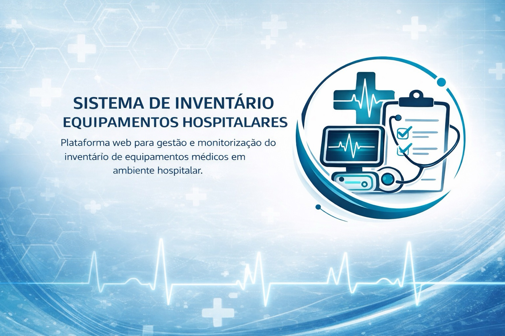

Plataforma web para gestão e monitorização do inventário de equipamentos médicos em ambiente hospitalar.

Conhecer a MediVaultA MediVault é uma plataforma web desenvolvida para apoiar instituições de saúde na gestão organizada e centralizada do inventário hospitalar de equipamentos médicos.
O sistema permite reunir, num único local, informação essencial sobre os equipamentos, incluindo categoria, localização, estado atual, fornecedor, documentação técnica, garantias e contratos associados.
O objetivo da plataforma é substituir métodos dispersos, como folhas de cálculo, documentos isolados e registos manuais, por uma solução digital mais segura, acessível e eficiente para os utilizadores autorizados.
Gerir equipamentos médicos e respetiva informação técnica
Associar equipamentos a localizações hospitalares específicas
Registar fornecedores, garantias e contratos associados
Consultar indicadores básicos através de um dashboard